Modeling component
The primary task of the modeling component is the specification of the model for estimation purposes but it also allows simulation of the model to obtain state and measurement data in the case that the model is also used as a data generator. The classes provided by this component makes it possible to naturally describe random variables and multivariate functions which are than employed for description of the system model.
Contents
Decription of the functions
Fuctions are essential part of the modeling component. They are used in the other two parts of this component. Generally, the function may act upon state, input, noise, and time (i.e. 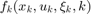 ). The prime purpose of the functions is to provide either a base for stochastic equations describing the state transition or measurement or for a description of parameter of random variable pdf’s utilized for the probabilistic description.
The framework offers three basic classes for functions description:
- constant function (nefConstFunction) - 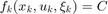
- linear function (nefLinFunction) - 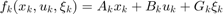
- handle function (nefHandleFunction) - any arbitrary 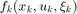
The instances of the above mentioned classes describing functions can evaluate the function at an arbitrary point and also its first and second derivatives with respect to state or noise if specified. The most powerful of those is the handle function class nefHandleFunction utilizing anonymous function handles in MATLAB®. To show its power, let us consider the nonlinear function
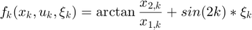
The nefHandleFunction provides the most easy and quickest way of specifying such a function. The object describing this function can be created using the following command
f = nefHandleFunction(@(x,u,w,k) atan(x(2)/x(1))+sin(2*k)*w,[2,0,1,1]);
where the first parameter @(x,u,w,k) atan(x(2)/x(1))+sin(2*k)*w is the MATLAB® anonymous function handle and the vector [2,0,1,1] determines dimension of individual variables representing state x, input u, noise w, and time k.
Decription of the random variables
All the random variables are within the NEF represented as objects which are instances of classes describing various probability density functions (pdf's). All the classes share common interface which provides these basic methods
- draw a sample,
- evaluate the pdf at a certain point,
- provide mean and variance,
- display a plot of the pdf.
An important property of the new framework is the fact that all parameters of the random variable distribution may be specified in two ways. They are considered to be either as a constants or as a functions of state, input and time. Thus, they are specified either numerically or using an instance of one of the function classes. This allows not only specification of random variables with time-varying parameters but also specification of conditional pdf’s which is crucial for probabilistic description of the considered system. As far as actual random variables are concerned, currently the framework supports description of the following pdf’s:
- multivariate uniform (class nefUniformRV),
- multivariate Gaussian (class nefGaussianRV),
- multivariate Gaussian sum (class nefGaussianSumRV),
- multivariate empirical pdf (class nefEmpiricalRV),
- univariate Beta (class nefBetaRV),
- univariate Gamma (class nefGammaRV).
Examples of random variable description
The following command creates an object desribing uniformly distributed ramdom variable with pdf 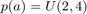
a=nefUniformRV(-2,4);
The more complex example presents the posibility to describe gaussian transient pdf 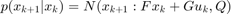, i.e. the case where the mean value is given as linear function of the state and the input. The mean is in this case given by object of the nefLinFunction.
xMean=nefLinFunction(F,G,[]); px=nefGaussianRV(xMean,Q);
Decription of the model
From the theoretical point of view, models considered within the NEF represent a discrete-time stochastic system in state-space representation with a continuous state.
The model can be described in two distinct ways:
- structurally - by means of transient and measurement functions accompanied with probability density functions of state and measurement noises and of the initial state
- probabilisticaly - by means of transient and measurement probability density function accompanied with probability density function of the initial state
The following picture shows how the individual part of the modeling component are used to describe the system model.
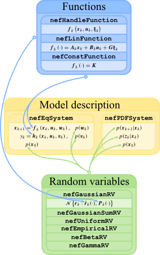
Structural description
In this case the system is given by generally nonlinear multivariate time varying functions, describing the state transition and measurement, and random variables, describing state and measurement noise and initial state.
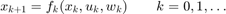
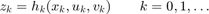
where 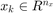, 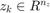 and 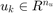 are state, measurement and control of the model, respectively, 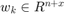 and 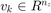 are state and measurement white noises described by pdf's 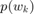 and 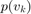, respectively. Both noises are mutually independent and they are also independent of the known initial state 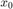 pdf 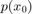.
The representation of structurally described system within the framework is accomplished emplying the nefEqSystem class.
(Demontration of the structural description can be found in Example 1).
Probabilistic description
This second way of model specification need specify transition and measurement pdf's
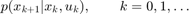
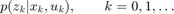
and the initial condition of the state is given by . The model is then represented by the instance of the class nefPDFSystem.
(Demontration of the probabilistic description can be found in Example 2).
It should be emphasized that both structural and probabilistic description may be time-varying. The way how the model is specified is often enforced by the chosen estimator. For estimators exclusively within the Kalman filtering framework, the structural description is required. The PF and the Gaussian sum method allow specification of the model by any of the two ways.